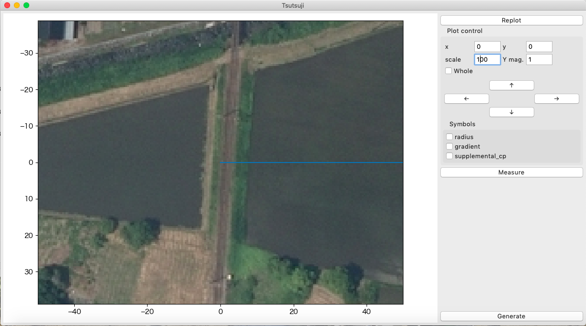

1. 空中写真をTsutsujiに表示する¶
1.1. 経緯度を調べる¶
maptile機能 を使って空中写真を表示するため、表示したい地点の経緯度を調べる。
画面中央のクロスマークをTsutsuji上での座標原点にしたい場所に合わせる
今回は立山線立山方に設定
経度: 36.69731055253167
緯度: 137.31857900872157
ウィンドウ左下の↗️アイコンをクリックして、表示された経緯度を読み取る
googleマップで調べたい場所を右クリックしてメニュー最上段に表示される経緯度を使ってもよい
googleマップの方が経緯度の有効数字が大きいので今回はこちらの値を使用
{kind=link}
1.2. CFGファイルの作成¶
同じディレクトリに下記の内容でmain.cfg, tateyama_up.txtを作成する
作成したmain.cfgをTsutsujiで読み込む
下図のように空中写真がメインウィンドウ上に表示される
座標(0, 0)を起点としてtateyama_up軌道がx正の方向に伸びる
{kind=link}
[@TSUTSUJI_GENERAL]
owntrack = tateyama_up
unit_length = 1
origin_distance = 0
offset_variable = hoge
[@MAPTILE]
longitude = 137.31857900872157
latitude = 36.69731055253167
x0 = 0
y0 = 0
alpha = 1
zoomlevel = 18
template_url = https://cyberjapandata.gsi.go.jp/xyz/seamlessphoto/{z}/{x}/{y}.jpg
toshow = True
autozoom = True
[tateyama_up]
file = tateyama_up.txt
absolute_coordinate = True
x = 0
y = 0
z = 0
angle = 0
endpoint = 1500
BveTs Map 2.02:utf-8
0;
Curve.SetGauge(1.067);
Curve.SetFunction(0);
1.3. 基準座標の修正¶
読み込まれた空中写真の原点付近を拡大すると、下図のように空中写真上の立山線線路が原点を通過していないことが分かる。 ここでは空中写真の基準座標([@MAPTILE]のx0, y0)を調整して、原点上を線路が通過するように修正する。
プロットウィンドウ上の座標を調べるために Measure機能 を使う。
{kind=link}
Note
表示範囲の拡大は、scaleフィールドの値を書き換えてenterキー
scaleフィールドの値は、プロットウィンドウx軸の表示範囲を表す
空中写真の更新は、shift+enterキー
Measureウィンドウを開く
カーソルAのPos.をクリックする
表示されたxカーソルで原点を写したい場所をクリックする
クリックした位置の座標がカーソルAのx, yフィールドに表示される
下記のようにmain.cfgを修正する
測定した座標をの符号を反転させた値をx0, y0に指定する
指定した距離だけ空中写真を並行移動して表示する
main.cfgをリロードすると、空中写真の基準座標が更新される
cfgファイル、マップデータのリロードはF5キー
{kind=link}
[@MAPTILE]
...
x0 = 6.4
y0 = -120.9
...